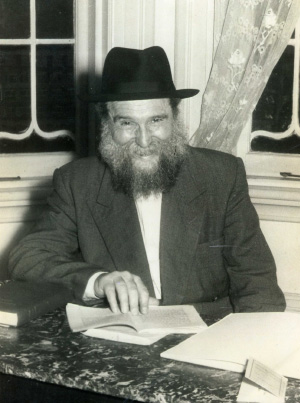

All of Anash Must Get Involved
A month and a half had passed since R’ Zalman wrote his last letter, on 7 Iyar. On 27 Sivan R’ Zalman wrote again and apologized about the long break and described his busy day that did not enable him to concentrate on writing a detailed report. Now and then he started writing a report, but did not finish it and it kept on getting postponed…

Prepared for publication by Avrohom Rainitz
The report begins with praise and thanks to Hashem for the success of the mosad, that he was able to buy a building, and for the many students learning in the afternoon, 110 boys. Within a few months the school had acquired a good reputation in Melbourne and throughout the country, he wrote, and he emphasized, “it is all with the kindness of Hashem in the merit of the Rebbe.”
Despite the large number of students, R’ Zalman was dissatisfied with the quality of the learning and felt hindered by some seemingly insurmountable problems.
The first obstacle was the dearth of qualified and available teachers. All the Lubavitchers who were able to teach were already enlisted, but it wasn’t enough and they were forced to take young bachurim for the first and second grades. One of the bachurim had recently decided to leave and go work in a factory in order to obtain a profession, and the other bachur indicated that he wanted to leave soon. This perturbed him greatly lest he be forced to close the youngest classes and “if there aren’t kid goats, there won’t be any adult goats.”
The second obstacle was the quality of the learning. The afternoon studies took place between four and six. The boys were tired after an entire day in school and they did not receive any encouragement from their parents to learn Jewish studies.
The third obstacle was the lack of suitable guidance for Jewish-Chassidic life. Since most of the Jews in Melbourne were associated with various parties, the children were under the influence of foreign ideas that were antithetical to the spirit of Chassidus. Therefore, aside from the learning, R’ Zalman yearned to provide the students with general guidance in Torah and mitzva observance with Chassidic flavor. But it was so hard to find regular teachers; it was even harder to find a good mashpia who would find his way to the hearts of the youth.
Before Shavuos R’ Zalman asked R’ Betzalel Wilschansky to farbreng with the students who were in the highest level of the yeshiva, those who came to learn in the evening after finishing their studies at the university. R’ Betzalel farbrenged with them and although the farbrengen wasn’t long, it made a tremendous impression on the talmidim. R’ Zalman was very pleased and he wrote to the Rebbe that he begged R’ Betzalel to farbreng with the students again, at every opportunity.
“If he does so, his class will be properly guided, with Hashem’s help,” wrote R’ Zalman. He added, “But in the rest of the classes we have no one to farbreng with them or at least to arrange a discussion with the talmidim. Having no choice, we suffice by telling a Chassidic story.”
R’ Zalman told the Rebbe that he invited Anash to a meeting and told them about the situation and asked them to devote themselves even more to the work of the yeshiva, each according to his talents. During the meeting, his son Chaim offered to test the students once every three weeks in order to spur them on to apply themselves to their studies. His offer was accepted and one test was given which did indeed spur them on, “but the main thing is missing and may Hashem have mercy and help as He helped us in the past.”
R’ ZALMAN’S HUMILITY
As we mentioned a number of times, R’ Zalman did not consider himself fit to be the dean of the mosad. He felt that he did not have the requisite talent and that it was only because there was no one else that he continued to fill the role. Although within a short time he had managed to start a successful school by anyone’s criteria, and throughout Australia they spoke about his astonishing success with respect and amazement, R’ Zalman was still humble about it.
He wrote to the Rebbe:
“The more the yeshiva expands and develops and the work grows, the more I feel my lack of suitability to run it. Truthfully, even if I was suited to it, since I am busy most of the day in learning with the students, I have no time nor the necessary composure to run a mosad that has developed with Hashem’s help, and which needs further developing with His help.
“Regarding the fact that Anash are not fully organized in general and in particular to be involved in the mosad, I blame myself. So too with the askanim that are not of Anash that I was unable to be mekarev, I try to strengthen them to do all that is necessary and to be happy as the Rebbe says, especially as we have what to rejoice about, thank G-d.
“But when I think about correcting the deficiencies and I am unable to correct them, I am very perturbed and I have no other recourse except to tell the Rebbe, the Nasi of the mosad, so that the Rebbe will state his opinion in how to go about all this and will arouse much mercy on those who are involved with the yeshiva in teaching and upon all of Anash, that Hashem grant them success in their holy work and fill their needs amply and in peace.”
CALL A MEETING
OF ALL OF ANASH
As soon as his letter arrived, the Rebbe responded in a letter dated 6 Tammuz. The Rebbe said he did not understand the reason for the long break and said someone should be in charge of writing letters about the yeshiva and other Chabad related matters in Australia. As for R’ Zalman saying the yeshiva was lacking, the Rebbe said that although matters should be rectified, this was not a reason for despair and despondency. After all, there was nothing in previous years and now there was what to show for his efforts.
The Rebbe said to call for a meeting of all of Anash and each of them should be appropriately involved in the yeshiva and in great measure whether personally, with his Torah knowledge as well as with his money or all of the above. No one was absolved. “Since this matter is a primary one in their current situation, according to my outlook. And as I have written a number of times, this is the vessel for the fulfillment of their needs, even the physical ones, and going on at length on such an obvious matter is only superfluous.”
UTILIZING ALL MEANS
R’ Zalman asked the Rebbe regarding a young man who had once learned in the Chafetz Chaim’s yeshiva in Radin. He was a great scholar, possessed of special talents, who also knew English quite well. He looked religious in every respect but people said he wasn’t as he seemed. R’ Zalman wanted to hire him as a staff member. In order to get to know him, he offered him a job fundraising for the yeshiva. His intention was that through the man’s working with money matters, he would get to see what the man was like.
The young man turned down the fundraising offer. At the same time, some friends of the yeshiva recommended hiring him in a spiritual capacity. R’ Zalman was undecided and asked the Rebbe what to do.
The Rebbe responded, saying that in general, in matters such as these, he should try to utilize all educational forces that were suitable for the work in the field of Chabad education. As far as what he heard rumored about the man, he should definitely check it out and there was certainly exaggeration. Since there was no intention to make him into a Chabad spokesman but just to put his talents to use, ways and means should be found to do so.
ACCEPTING THE CHILDREN OF THE HUNGARIANS
R’ Zalman also asked about the request of the Hungarian community, that their children be able to study secular studies in the Chabad school. Until then, their children had attended public school and in the afternoon they learned Jewish studies that their community provided. Once R’ Zalman opened a full day school which included secular studies, they wanted to send their children to his school for the secular studies portion of the day while continuing to learn Torah studies in their own program.
R’ Zalman received this request from one of the askanim in the Hungarian community and said he could not respond immediately. If they asked him again, there would be a discussion about it. R’ Zalman had no idea how to respond to the request. On the one hand, the school could double the number of students and acquire a good reputation for Chabad interacting well with other communities. On the other hand, he feared that if given a finger, they would try to take the whole hand and maybe even try to take control of the school.
He wrote to the Rebbe and the Rebbe’s response was to accept them while taking the necessary steps to absolutely rule out the fear of a takeover. The Rebbe did not consider this a reasonable possibility since they would not be part of the hanhala. In fact, once the boys started attending the Chabad school, it was possible that ultimately they would also learn the other subjects there.
So R’ Zalman gave a positive response to the Hungarian community and within a short time, their children began attending the secular studies in the Chabad school. And just as the Rebbe wrote, not only didn’t the Hungarians show any interest in taking over, some of them switched their children to learn full time in the Chabad school.
SHOULD THEY OPEN A CHABAD BUTCHER SHOP?
The final item mentioned in R’ Zalman’s long letter had to do with sh’chita. In those days, the Hungarians had a kosher butcher store and the Lubavitchers bought their meat there. With the development of the school, a Lubavitcher raised the suggestion of opening a Chabad butcher shop with all the profits going to the school.
R’ Zalman said they could convince R’ Betzalel Wilschansky to leave the job as a shochet for the Hungarians and work for the yeshiva. In addition, they would have to find a G-d fearing butcher and someone to supervise the kashrus.
The Rebbe’s answer was that he was unaware of all the details but in general, this was likely to stir up trouble. They had to investigate whether this was the case and whether they could actually do it, i.e. whether they had the right people who would want to get involved, and whether they would make a profit. When they had this information they could make a decision.
R’ Zalman dropped the idea of opening a butcher shop and Chabad Chassidim continued buying meat from the Hungarian store. It was first twenty years later, following the big dispute between Chabad and Satmar, that the Rebbe instructed Chabad Chassidim to establish their own kashrus system. That is when a separate Chabad kashrus organization was founded in Melbourne.
Beis Moshiach (staff). "All of Anash Must Get Involved." Beis Moshiach, no. 923 (April 9, 2014).